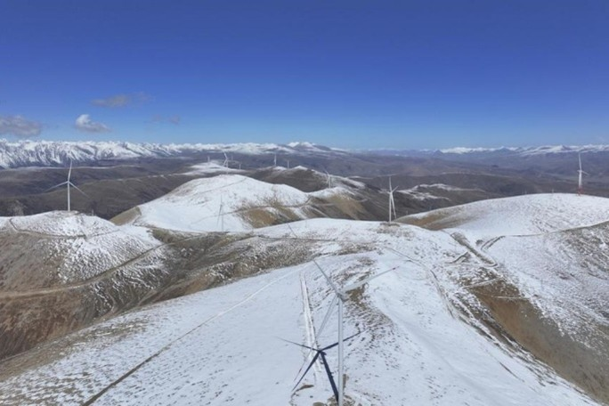
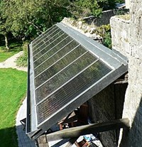
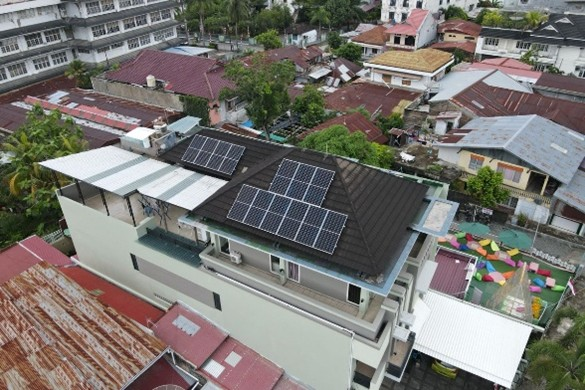
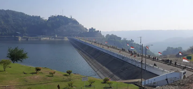
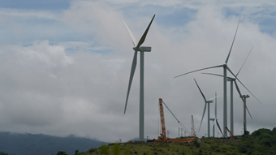
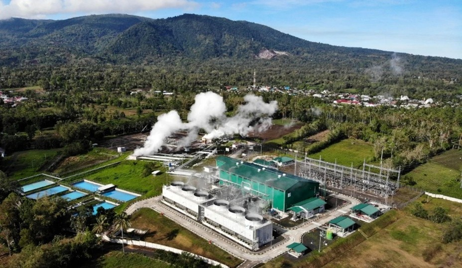
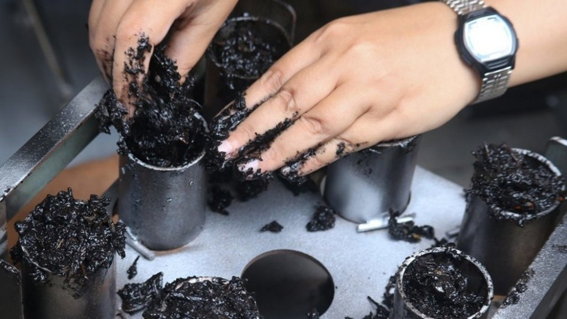

MATERI
PENGERTIAN ENERGI TERBARUKAN
Judul: Definisi Energi Terbarukan
Apa itu energi terbarukan?
Energi terbarukan adalah energi yang berasal dari proses alam yang berkelanjutan, seperti tenaga surya, tenaga angin, arus air, proses biologi, dan panas bumi. Energi terbarukan senantiasa tersedia di alam dalam waktu yang relatif sangat panjang, karena merupakan energi berkelanjutan.

Proyek pembangkit listrik tenaga angin (antaranews.com)
Gambar tersebut adalah salah satu penggunaan energi terbarukan yaitu energi angin, proyek pembangkit listrik tenaga angin ini memiliki selubung mesin (nacelle) yang terpasang di lokasi tertinggi di ketinggian 5.305 meter. Turbin angin tersebut dirancang untuk tahan terhadap lingkungan dan kondisi cuaca ekstrem, termasuk suhu yang sangat rendah, radiasi ultraviolet yang kuat dan badai petir yang sering terjadi pada ketinggian ultratinggi. Pembangkit listrik ramah lingkungan ini dapat menghemat sekitar 73.100 ton batu bara standar pertahun dan mengurangi emisi karbon dioksida sekitar 182.800 ton.
CONTOH ENERGI TERBARUKAN
- Energi surya
Energi surya adalah energi yang berupa sinar dan panas dari matahari. Energi ini dapat dimanfaatkan dengan menggunakan serangkaian teknologi seperti pemanas surya, fotovoltaik surya, listrik panas surya, dan fotosintesis buatan.
Teknologi energi surya dikategorikan menjadi dua kelompok, yakni teknologi pemanfaatan pasif dan teknologi pemanfaatan aktif. Contoh pemanfaatan energi surya secara aktif adalah penggunaan panel fotovoltaik dan panel penyerap panas, sedangkan contoh pemanfaatan energi surya secara pasif meliputi mengarahkan bangunan ke arah matahari, memilih bangunan dengan massa termal atau kemampuan dispersi cahaya yang baik, dan merancang ruangan dengan sirkulasi udara alami.
Tahun 2011, Badan Energi Internasional menyatakan bahwa ”perkembangan teknologi surya yang terjangkau tidak habis, dan bersih akan memberikan keuntungan jangka panjang yang besar”.

Pemanas air surya terhadap matahari untuk menghasilkan penyerapan (id.wikipedia.org)
Gambar di atas merupakan sistem air panas surya menggunakan sinar matahari untuk memanaskan air. Daerah yang menggunakan pemanasan air tersebut biasanya daerah dengan lintang bujur geografis rendah (di bawah 40 derajat), 60% - 70% air panas untuk keperluan rumah tangga dengan temperatur sampai dengan 60 derajat dapat diperoleh dengan menggunakan sistem pemanas surya. Jenis pemanas air surya yang umum digunakan adalah plat datar dengan kaca (44%) untuk kebutuhan air panas rumah tangga, dan kolektor plastik tanpa kaca (21%) digunakan untuk memanaskan kolam renang.

Penggunaan panel surya di rumah (kompas.com)
Gambar di atas merupakan penggunaan panel surya di rumah. Penggunaan panel surya di rumah memiliki beberapa dampak positif seperti, hemat biaya listrik, listrik tetap menyala saat ada pemadaman, dan dapat meningkatkan nilai rumah seperti yang dijelaskan dalam sebuah studi di Berkeley National Laboratory bahwa panel fotovoltaik surya dipandang sebagai peningkatan nilai jual. Pemasangan panel surya umumnya akan memberikan dampak lingkungan yang lebih kecil dibandingkan dengan penggunaan bahan bakar fosil.
- Energi air
Energi air merupakan salah satu sumber energi terbarukan yang melimpah di dunia. Energi air adalah sumber energi terbarukan yang berasal dari kekuatan air dengan menggunakan bendungan atau struktur pengalihan untuk mengubah aliran alami sungai atau badan air lainnya. Contoh pemanfaatan energi air dapat kita lihat pada Pembangkit Listrik Tenaga Air (PLTA) yang bergantung pada sistem siklus air yang terus diisi ulang untuk menghasilkan listrik.

PLTA Waduk Citara Purwakarta (purwakarta.pikiran-rakyat.com)
- Energi angin
Energi angin adalah energi yang dihasilkan dari gerakan udara atau angin yang bisa dimanfaatkan untuk menghasilkan listrik atau melakukan pekerjaan mekanis. Energi ini termasuk dalam kategori energi terbarukan karena berasal dari sumber yang tidak akan habis.

Kincir angin PLTB Sidrap, Sulawesi Selatan (kumparan.com)
Terdapat beberapa dampak negatif dari energi angin, yaitu:
- Pengaruh terhadap habitat dan satwa
- Gangguan visual dan kesehatan
- Pemasangan dan pemeliharaan
- Efek pada pola cuaca lokal
- Resiko kecelakaan dan kerusakan
- Energi panas bumi
Energi panas bumi adalah energi panas yang terdapat dan terbentuk di dalam kerak bumi. Menurut pasal 1 UU No. 27 tahun 2003 tentang Panas Bumi: ”Panas bumi adalah sumber energi panas yang terkandung di dalam air panas, uap air, dan bantuan bersama mineral ikutan dan gas lainnya yang secara genetik semuanya tidak dapat dipisahkan dalam suatu sistem panas bumi dan untuk pemanfaatannya diperlukan proses penambangaan.”

PLTP Ulubelu Tanggamus, Lampung (zonaebt.com)
Sejak tahun 2011, PGE telah mengembangkan proyek geothermal di area Ulubelu, yang telah dimanfaatkan oleh sekitar 244.000 rumah. Hal tersebut membantu menekan laju emisi dan menjaga keasrian lingkungan dengan memberikan konstribusi positif dalam up
- Biomassa
Biomassa merupakan bahan organik yang dihasilkan melalui proses fotosintetik, baik berupa produk atau buangan. Contohnya adalah tanaman, pohon, ubi, rumput, kotoran ternak, limbah, dan sebagainya. Kelebihan dari sumber energi biomassa adalah terbarukan sehingga dapat menyediakan sumber energi secara berkelanjutan. Mengutip dari laman IPB, potensi biomassa di Indonesia sangat besar yaitu limbah hewan dan tumbuhan adalah bahan baku melimpah di negara ini.
Penggunaan limbah menjadi bahan bakar akan memberikan 3 keuntungan yaitu peningkatan efisiensi energi secara keseluruhan, penghematan biaya dan mengurangi tempat penimbunan sampah terutama di perkotaan yang lahannya lebih sempit di banding pedesaan.

Briket sebagai pengganti bahan bakar (tirto.id)
Manfaatan briket sebagai energi alternatif jelas cukup potensial. Setidaknya ada dua alasan yang mendasari mengapa briket bisa dijadikan alternatif.
- Briket memiliki nilai kalor lebih tinggi dibandingkan pembakaran biomassa biasa. Nilai kalor yang muncul dari pembakaran biomassa kurang lebih 3.000 kal. Sebaliknya, pembakaran briket bioarang mampu memunculkan energi sehingga 5.000 kal dan bahkan lebih.
- Bahan baku briket arang dari biomassa kini tersedia dalam jumlah besar.
MANFAAT ENERGI TERBARUKAN
Beberapa tahun terakhir, perubahan iklim dan kekhawatiran terhadap ketersediaan sumber energi konvensional telah mendorong dunia untuk beralih ke sumber energi terbarukan atau berkelanjutan. Energi terbarukan seperti, energi surya, energi angin, energi air, panas bumi, dan biomassa, telah menjadi fokus utama dalam upaya menciptakan masa depan yang lebih hijau dan berkelanjutan. Berikut adalah beberapa manfaat dari pemanfaatan energi terbarukan:
- Ramah lingkungan
Energi terbarukan menghasilkan sedikit atau bahkan tidak ada emisi gas rumah kaca dan polutan udara, mengurangi resiko perubahan iklim dan memperbaiki kualitas udara.
- Ketersediaan yang berkelanjutan
Dengan memanfaatkan sumber energi terbarukan, kita dapat mengurangi ketergantungan pada bahan bakar fosil yang semakin langka dan berkontribusi pada keberlanjutan ekonomi global.
- Ciptakan lapangan kerja
Industri energi terbarukan menciptakan peluang pekerjaan yang signifikan. Proyek-proyek pembangkit listrik tenaga surya, angin, air memerlukan tenaga kerja yang terampil dan tidak hanya mendukung pertumbuhan ekonomi lokal tetapi juga memberikan konstribusi positif terhadap pekerjaan seluruh dunia.
- Stabilitas energi
Energi terbarukan dapat membantu menciptakan kestabilan sistem energi. Sebagian besar sumber energi terbarukan bersifat terdistribusi dan dapat diakses secara lokal, mengurangi resiko gangguan pasokan energi yang disebabkan oleh bencana alam atau konflik politik di daerah tertentu.
- Peningkatan akses energi
Energi terbarukan juga dapat meningkatkan akses energi di daerah terpencil atau negara berkembang yang masih mengalami kesulitan dalam memenuhi kebutuhan listrik. Sistem energi terbarukan yang mudah diimplementasikan dapat menjadi solusi untuk membawa listrik ke komunitas yang sebelumnya tidak terlayani.
Berikut terdapat link video inovasi pemanfaatan energi terbarukan yang dapat teman-teman tonton.
KELEBIHAN ENERGI TERBARUKAN
Energi memiliki banyak kelebihan sehingga banyak alasan mengapa energi terbarukan harus dikembangkan dan dimanfaatkan secara luas.
Beberapa kelebihan energi terbarukan, yaitu:
- Tersedia melimpah di alam, tidak akan habis, dan ramah lingkungan
- Sumber energi terbarukan bisa dimanfaatkan secara gratis
- Perawatan relatif lebih mudah dan murah di bandingkan teknologi yang memanfaatkan energi tak terbarukan
- Mandiri energi, tidak perlu mengimpor energi tak terbarukan atau energi fosil dari luar negeri
- Membantu mendorong perekonomian dan menciptakan peluang kerja
- Lebih murah daripada energi fosil dalam jangka panjang. Beberapa teknologi mudah diterapkan di daerah-daerah terpencil
- Produksi bisa dihasilkan di berbagai tempat, tak perlu disentralisasi.
KEKURANGAN ENERGI TERBARUKAN
Meskipun penuh akan manfaat dan memiliki banyak kelebihan, energi terbarukan juga memiliki kekurangaan. Berikut kekurangan energi terbarukan:
- Biaya awal besar atau investasi yang membutuhkan dana yang cukup banyak
- Sebagian besar sumber energi terbarukan terkendala faktor cuaca
- Energi tambahan yang dihasilkan energi terbarukan harus disimpan dalam sistem penyimpanan seperti baterai supaya tidak terbuang sia-sia
- Masing-masing sumber energi terbarukan memiliki kelemahan teknis dan sosialnya sendiri
Beberapa teknologi pemanfaatan energi terbarukan masih bersifat eksperimental seperti energi gelombang laut, energi pasang surut air laut, dan energi panas.
Latihan Soal
Halo teman-teman
Silahkan kerjakan latihan soal berikut, untuk mengevaluasi pembelajaran hari ini.